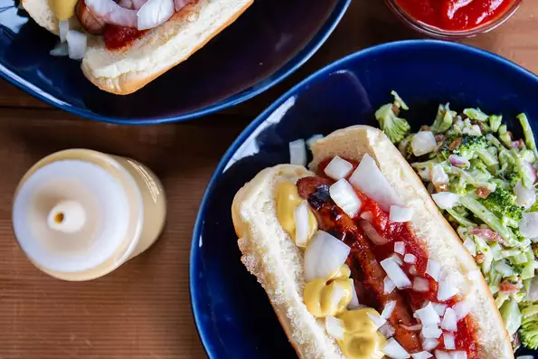

Detroit-Style Coney Dogs

Ingredients
- 4 hot dogs with natural casings
- 1 hot dog rolls, sliced
- 1 small onion, diced
- 1 (10 ounce) can chile sauce without beans
- 4 tablespoons prepared yellow mustard, or to taste
Steps
- Preheat an oven to 350 degrees F (175 degrees C). Grease 12 muffin cups or line with paper muffin liners.
- Whisk the flour, baking powder, and salt together in a bowl; set aside. Beat 1/2 cup butter and the white sugar with an electric mixer in a large bowl until light and fluffy. Add the eggs one at a time, allowing each to blend into the butter mixture before adding the next. Beat in the vanilla with the last egg. Pour in the flour mixture alternately with the milk, mixing until just incorporated. Fold in the chopped bananas, mixing just enough to evenly combine. Pour the batter into prepared cups.
- Bake in the preheated oven until a toothpick inserted into the center comes out clean, about 20 minutes. Cool in the pans for 10 minutes before removing to cool completely on a wire rack.
- While the cupcakes are cooling, make the buttercream by beating 2/3 cup of butter in a bowl until smooth and glossy. Beat in the vanilla, followed by the confectioners' sugar. Once no dry lumps of sugar remain, add the cream and food coloring. Whip on high speed until light and fluffy. Frost the cooled cupcakes with the buttercream frosting.